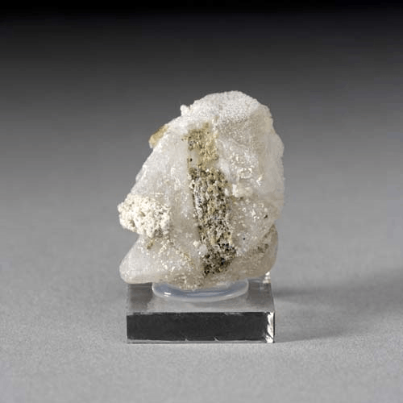

Cryolite - AgCl
Halides


Habit: Cubic crystals, in parallel or subparallel groups; rarely as stalactites or aggregates; fibrous. Typically massive, forming crusts and films. Colorless, pale yellow or gray, turns violet-brown to purple on exposure to light. Transparent to translucent, resinous to Adamantine Luster.
Environment: Found in the oxidized zone above silver deposits; commonly preserved in arid climates
Etymology: For chlorine, and the Greek for silver, argyros, in its composition